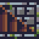
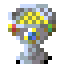

Click "BACK" to go back to the welcome page.
Information:
|
Combining Roguelites and the classic Word Munchers gameplay,
to create a game to play while learning English-Japanese words.
ローグライトと古典的なワードマンチャーズのゲームプレイを組み合わせて、
英和単語を学習しながらプレイできるゲームを作成しました。
|
|

|
Select all the correct tiles to open the stairs.
正しいタイルをすべて選択して階段を開きます。
|
|

|
Clear all the levels and claim the sacred chalice at the end!
すべてのレベルをクリアして、最後に聖杯を手に入れましょう!
|
Controls:
Press "WASD" to move.
Press any key to open the main menu.
Press "SPACE" or "ENTER" to select menu options.
Press "R" to go back in the menu.
「WASD」を押して移動します。
任意のキーを押すと、メイン メニューが開きます。
メニューオプションを選択するには「SPACE」又は「ENTER」を押します。
メニューに戻るには、「R」を押します。
Press [ 1 - 8 ] number keys to use your items and scrolls.
[ 1 ～ 8 ] 数字キーを押して、アイテムとスクロールを使用します。
Use "SPACE" or "ENTER" to select the tile vocabulary you are on.
「SPACE」または「ENTER」を使用して、現在のタイル語彙を選択します。
Correct selections heal you.
正しい選択があなたを癒します。
Wrong selections decrease your score, and will eventually hurt you.
間違った選択をするとスコアが下がり、最終的には損害を被ることになります。
Collecting gold can protect you and increase your score, but it also makes more monsters come for you.
ゴールドを集めるとあなたを守り、スコアを増やすことができますが、
より多くのモンスターがあなたを探しに来るようになります。
There are bonuses for perfect games with no mistakes. Try to get them all!
ミスのない完璧なゲームにはボーナスがあります。 全部ゲットしてみてください！
Monsters:
Different monsters roam the dungeon:
ダンジョン内にはさまざまなモンスターが徘徊しています。
Bat: a generic monster, no special actions or abilities.
コウモリ: 一般的なモンスターで、特別なアクションや能力はありません。
Wizard: swaps correct tile words and incorrect ones, cannot be stun-locked.
ウィザード: 正しいタイルの単語と間違った単語を交換します。スタンロックはできません。
Thief: steals gold from you before hurting you.
泥棒: あなたを傷つける前に金を盗みます。
Skeleton: slow-moving, but strong with high health.
スケルトン：動きは遅いが、体力が高くて、強い。
Drops:
Some monsters drop items or scrolls of magic:
一部のモンスターはアイテムや魔法の巻物をドロップします。
Item: アイテム:
Potion: Heals your HP.
ポーション：HPを回復します。
Repel: Repels monsters for a short time.
よけ：短時間モンスターを撃退します。
Sword: Increases your attack power, but wears down eventually.
剣：攻撃力が上昇しますが、やがて使い古します。
Armor: Increases your defense ability, but wears down eventually.
よろい：防御力が上がりますが、やがて着潰します。
Magic Scroll 魔法の巻物:
Warp: Moves you to a random tile.
ワープ: ランダムなタイルに移動させます。
Storm: Moves all monsters to a random tile.
ストーム: すべてのモンスターをランダムなタイルに移動させます。
Aura: Heals yours, and surrounding monsters' HP.
オーラ：自分と周囲のモンスターのHPを回復します。
Thunder: Shoots lightning in four directions around you.
サンダー：周囲4方向に稲妻を発射します。
Fireball: Shoots a ball of fire in the last direction that you moved.
ファイアボール: この前に移動した方向に火の玉を発射します。
Freeze: Freezes monsters for a short time.
フリーズ：モンスターを短時間凍結させます。
Steal: All enemies drop some gold.
ぬすむ：すべての敵がゴールドを落とします。
Study: Clears some incorrect answer tiles.
がくしゅう: いくつかの不正解なタイルを消去します。
Copy: Copies one of another scroll in your bag.
コピー: バッグ内の別の巻物を 1 つをコピーします。
Cheat: Highlights all remaining correct answer tiles, but has a random penalty.
チート: 残りの正解なタイルをすべて強調表示しますが、ランダムなペナルティがかかります。
Thank you for reading this far.
ここまで読んでくれてありがとうございます。
(Try adding a * to your code when selecting contents.
コンテンツを選ぶとき、コードに「*」をつけてみてください。）